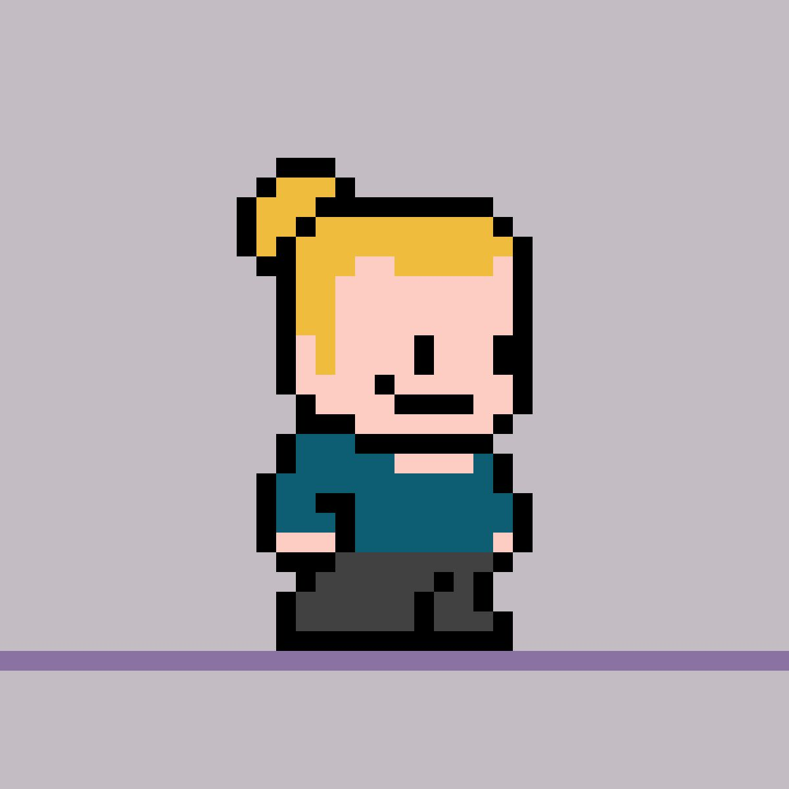

Sobre Mí
Hola, soy Julian Gonzalez Vargas. Soy un profesional en Administración de Tecnología de Información, apasionado por la programación, la administración de proyectos y el diseño UI/UX. Me dedico a desarrollar soluciones tecnológicas efectivas y a mejorar la experiencia del usuario en cada proyecto que emprendo.
Información Personal
Educación
Carrera: Administración de Tecnología de Información
Cursos Relevantes:
- Desarrollo Ágil de Aplicaciones Web
- Diseño de Software
- Diseño de Dashboard
Habilidades
- Pensamiento crítico
- Manejo del estrés
- Negociación
- Comunicación asertiva
Intereses
- Programación
- Administración de proyectos
- Diseño UI/UX
Proyectos
Galería de Imágenes Full Stack
(MongoDB, Express, React, Node)
Juego de Novela Gráfica
(JavaScript, CSS, HTML)
Contacto
Correo Electrónico
Puedes contactarme a través de mi correo electrónico: juliangv.sk8@gmail.com
Correo Electrónico
Puedes contactarme a través de mi correo electrónico: juliangv.sk8@gmail.com